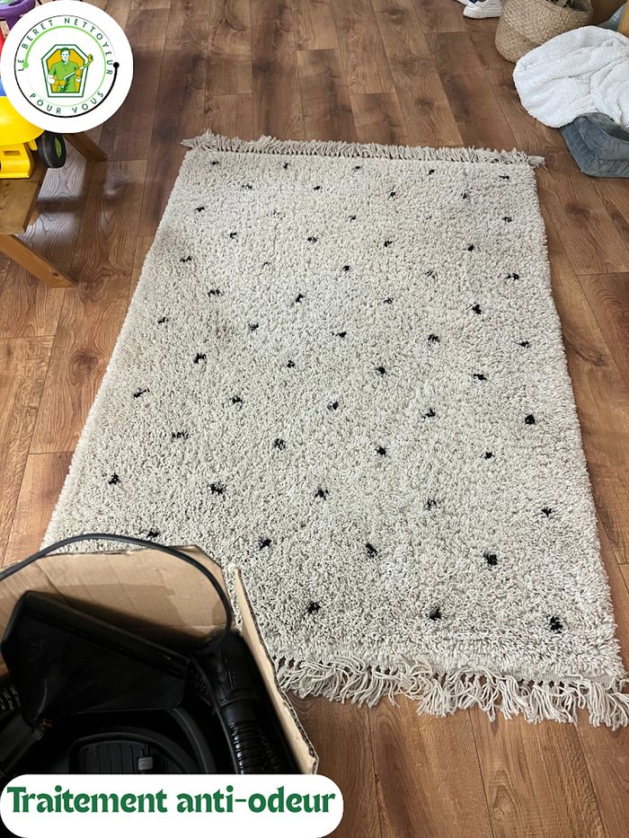

Nettoyage de moquettes et de mobilier de bureau à Paris, 92, 95 et 78
Le Béret Nettoyeur nettoie moquettes, sièges, banquettes et cloisons textiles à Paris et dans les Hauts-de-Seine, le Val-d’Oise et les Yvelines. Nous travaillons à l’injection-extraction : la fibre est rincée puis aspirée, et le traitement anti-odeur agit au cœur du textile.
-
Devis gratuit sous 24 h ouvrées
-
Entreprise assurée en responsabilité civile professionnelle
-
Noté 5,0 sur 5 par nos clients sur Google

Pourquoi nous confier vos textiles
La fibre est rincée puis aspirée : l’odeur est retirée, pas masquée.
Les odeurs traitées à la source, pas parfumées
Une odeur qui revient trois jours plus tard est une odeur masquée. Sur les souillures organiques — urine animale, régurgitations, transpiration, lait renversé — nous appliquons un traitement enzymatique avec un temps de pose suffisant pour qu'il dégrade les résidus responsables de l'odeur, au cœur du rembourrage. Les cristaux d'urine se réactivent à la moindre humidité : ils doivent être détruits, pas recouverts d'un parfum.
La saleté sortie du textile, pas déplacée
L'injection-extraction pulvérise une solution sous pression dans la fibre, puis l'aspire dans le même mouvement avec les salissures remises en suspension. Contrairement à un shampooing frotté en surface, la matière quitte réellement le support. Nous terminons par plusieurs passes d'aspiration sans injection pour retirer le maximum d'eau résiduelle.
Un rinçage neutralisé : le textile ne se resalit pas aussitôt
Un détergent alcalin laissé dans la fibre reste collant et recapte la poussière en quelques semaines : le canapé paraît propre, puis grisaille plus vite qu'avant. Nous rééquilibrons le pH du textile en fin d'intervention, pour une fibre souple, sans résidu savonneux ni auréole en bordure de zone.
Un protocole choisi selon la fibre, pas une recette unique
Avant toute chose, nous lisons l'étiquette d'entretien (W, S, WS, X), identifions la fibre et réalisons un test de solidité des couleurs sur une zone cachée : dessous d'accoudoir, revers d'ourlet, coin de tapis sous un meuble. Velours, microfibre, laine, lin, coton et viscose n'acceptent ni la même humidité, ni le même pH, ni la même température.
Une entreprise locale, assurée, qui répond vite
Le Béret Nettoyeur est basé rue des Tournelles à Versailles et intervient à Paris intra-muros, dans les Hauts-de-Seine, le Val-d’Oise et les Yvelines, du lundi au samedi de 9 h à 19 h. L'entreprise est dirigée par Lucas, assurée en responsabilité civile professionnelle et notée 5,0/5 sur 17 avis Google. Votre devis est gratuit et vous parvient sous 24 h ouvrées.
Les textiles et garnissages que nous traitons
Les textiles que nous traitons.
Notre méthode, étape par étape
De l’identification de la tache au séchage.
Diagnostic et devis
Sur place, ou à partir de photos et de dimensions, nous identifions la fibre, lisons l'étiquette d'entretien, relevons les taches — nature, ancienneté, étendue — et localisons les sources d'odeur. Un test de solidité des couleurs est réalisé sur une zone non visible. Le tarif est établi sur devis personnalisé selon la surface, et vous le recevez gratuitement sous 24 h ouvrées.
Préparation à sec et détachage ciblé
Nous commençons toujours par une aspiration à sec complète : sur un textile non aspiré, l'eau transforme la poussière et le sable en boue au cœur de la fibre. Vient ensuite le détachage, tache par tache. Les tanins (café, thé, vin) ne se traitent pas comme les protéines (sang, lait, transpiration), qui exigent un produit à froid sous peine de les coaguler dans la fibre, ni comme les corps gras. Le pré-traitement est brossé en douceur, puis laissé agir le temps nécessaire.
Injection-extraction et neutralisation
La solution est injectée sous pression dans le textile, puis aspirée immédiatement avec les salissures décollées. Nous travaillons panneau par panneau, d'une couture à l'autre, pour éviter les démarcations, et dans le sens du poil sur les velours. Un rinçage ramène le pH de la fibre à la normale, puis plusieurs passes d'aspiration seule retirent l'humidité résiduelle.
Séchage, contrôle et remise en service
Nous remettons le poil et les fibres dans le sens, mettons l'air en mouvement pour accélérer le séchage, et faisons le tour du résultat avec vous. Nous vous indiquons le délai à respecter avant de reposer draps, protège-matelas, housses ou coussins : un textile remis sous housse avant séchage à cœur peut développer une odeur de renfermé.
Questions fréquentes sur le nettoyage de canapés, matelas et tapis
Une question qui n’est pas là ? Appelez-nous au 06 99 01 12 57, du lundi au samedi de 9 h à 19 h.
Combien de temps faut-il attendre avant de réoccuper les bureaux ?
À la fin de l'intervention, le textile est humide au toucher, pas détrempé : l'extraction retire l'essentiel de l'eau injectée. Le séchage à cœur dépend de la fibre, de la densité, de la température et surtout de la ventilation — comptez quelques heures pour des sièges, une nuit pour une moquette dense. C'est pourquoi nous intervenons le plus souvent en fin de journée ou le samedi : les équipes retrouvent des locaux secs le matin suivant.
Le traitement anti-odeur fonctionne-t-il sur le tabac, la cuisine ou l'humidité ?
Oui, à condition d'atteindre la source. Tant que la souillure reste dans le textile et son rembourrage, un traitement enzymatique appliqué avec un temps de pose suffisant dégrade les résidus organiques à l'origine de l'odeur, au lieu de la couvrir. En revanche, si l'odeur vient de la thibaude, du plancher sous la moquette ou d'un défaut de ventilation, aucun traitement de surface ne suffira : nous vous le disons au diagnostic plutôt qu'après la facture.
Tous les tissus supportent-ils l'injection-extraction ?
Non, et c'est précisément pour cela que nous testons avant. Les codes d'entretien W et WS acceptent un nettoyage aqueux ; le code S impose un solvant et le code X interdit tout produit, aspiration seule. La viscose, la soie et certains dossiers de tapis en jute réagissent mal à l'eau : rétrécissement, auréoles, brunissement. La laine, elle, demande un pH doux et une eau tempérée. Si un support ne supporte pas la méthode, nous vous l'annonçons plutôt que de prendre le risque d'abîmer votre meuble.
Quel est le prix d'un nettoyage de moquette de bureaux ?
Sur devis personnalisé selon la surface et l'état. Une moquette de circulation très fréquentée et une salle de réunion peu utilisée ne demandent ni le même nombre de passages ni le même temps de séchage. Nous chiffrons au mètre carré après avoir vu les lieux ou des photos, et le devis vous parvient sous 24 h ouvrées. Appelez le 06 99 01 12 57.
Demandez votre devis gratuit au 06 99 01 12 57
Décrivez-nous votre besoin, ou envoyez-nous simplement des photos par SMS. Tarif sur devis personnalisé selon la surface, réponse sous 24 h ouvrées.